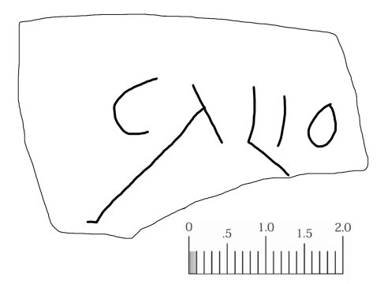
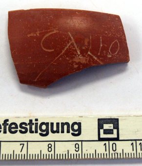

cara-006-calio
Grafito con la lectura «Calio o Calio(pe)» sobre cerámica (Cara, Santacara, Navarra)
Cara (Santacara, Navarra), Hispania citerior ·


Texto
Otras lecturas posibles
- Calio(pe)
Comentario
La distancia entre la «o» y la rotura de la pieza sugiere que la inscripción está completa. El nombre Calius/Calio está localizado en Germania superior, Pannonia inferior, Dalmatia o en el Véneto. En la Gallia Narbonensis, en la actual Avignon, se conoce el sello Of(ficina) Calio, que sus editores desarrollaron como Calio(nis). Más habitual en la Península es el nombre de Calus. En Hispania existen varios testimonios, algunos de los cuales proceden de la zona de Extremadura, al igual que el femenino Calia. El nombre tampoco debía ser desconocido en relación a la cerámica, por los sellos del ceramista galo CALVVS, que incluyen la variante CALVS. En Pompelo se ha encontrado uno de sus sellos, CALVI. Tampoco puede descartarse la opción de Calio(pe), que está atestiguado en Sasamón (Burgos), Moncada (Valencia) y Castelo Branco (Portugal).
Descripción
- Soporte
- Fragmento de terra sigillata.
- Disposición
- Localización en la pieza: Cerca del borde.
- Lugar de origen
- Cara (Santacara, Navarra), Hispania citerior
- Hallazgo
- Excavaciones de M.A. Mezquíriz en Santacara, campaña de 1982. Referencia de caja: Santacara 82. Td 3. Est. I
- Ubicación actual
- Almacén de Arqueología del Gobierno de Navarra
- Sigla
- Santacara 82. Td 3. Est. I
Bibliografía
- P. Ozcáriz Gil, ««Excavando» en lo ya excavado: grafitos epigráficos de la campaña de 1982 de la ciudad romana de Cara (Santacara, Navarra)», Studia Storica in honorem Prof. Urbano Espinosa Ruiz (2018), pp. 109-131.